1. 프로젝트
코코넛(C++)의 레거시 기능을 솔에딧(Web)으로 이식하여 지도 편집 시스템을 구축합니다.
- 보행자 네트워크 데이터 정밀화
- 도로 기하 구조 및 속성 관리
- 안내용 시각 자원 생성
주요 객체 정보
📍 노드 (도로, 보행자에 적용)
- 속성: 노드 ID, 연결 Link 개수, 신호등, DB Type 등
- 종별: 도로 교차점, 속성 변환점, 도로 종료점 등
- 하이웨이: 톨게이트 종류, 입출구, 발권, 정산, 도로/시설 시종점, IC 명칭 안내
🛣️ 링크 (도로, 보행자에 적용)
- 시설물 (18종): 횡단보도, 육교, 지하보도, 교량, 지하상가, 토끼굴, 지하철 등
- 단지 정보: 공원, 학교, 광장, 주거 등 속성 매핑
- 상태/환경: 유료 여부, 공사 여부, 통행 환경 등
🪢 폴리라인 & 🔳 폴리곤
- 폴리라인 종별: 임시, 도로, 건물, 수계, 철도, 지하철, 고속철도, 녹지, 행정계, WebGIS
- 폴리곤 종별: 임시, 도로, 건물, 수계, 철도, 지하철, 고속철도, 단지, 녹지, 등고선, 국가, 택지개발지구, WebGIS
- 3D 매칭 정보: 약 1,500개의 3D 매칭 정보 존재
기타
- 교통정보
- NRG
- 상용차
- CCTV
- 공공데이터(도로명)
- 행정계
- 유고정보
객체 생성/수정 방식
다음 2가지 방식을 모두 지원
- 직접 드로잉: 지도 위 마우스 클릭/드래그
- 좌표 입력: 수동 좌표 직접 입력
적용 좌표계 (전역 공통)
GRS 좌표계 및 Bessel→ EPSG:3857
모든 공간정보는 DB에 GRS 좌표계와 Bessel를 사용하여 저장되며, 로딩하여 화면(OL)에 표출할 때는 EPSG:3857 포맷으로 동적 변환하여 사용합니다.
객체 메모
각 객체에 대해 메모 작성이 가능
DB 작업
DB 호출 및 CRUD 작업은 대부분 저장 프로시저(Stored Procedure, 예: GP_RTN_COMMON_CROSS_SAVE)를 활용하여 처리됩니다.
2. 진행된 기능 목록
솔에딧 코어 및 5개 카테고리
- ✓ 프론트엔드/백엔드 기본 아키텍처 구축
- ✓ 1_보행자, 2_도로, 4_랜더링, 5_배경, 6_교통정보
📋 상세 구현 기능 명세
| 카테고리 | 구현 상세 기능 |
|---|---|
| 분류 외 |
|
| 2_도로 |
|
| 4_랜더링 |
|
| 5_배경 (GIS 편집) |
|
| 6_교통정보 |
|
| 7_공통 |
|
3. UI 화면 (코코넛, 솔에딧)
기존 시스템(코코넛)과 신규 시스템(솔에딧)의 주요 기능별 화면 레이아웃 및 구성을 확인합니다.
* 도로 레이어 표출
코코넛 (Coconut) - 기존 C++
기존 데스크톱(CS) 클라이언트 UI
기존 데스크톱 환경입니다. 블랙 배경의 지도를 기본으로 사용하며, 상단 메뉴바와 툴바, 좌측의 도킹된 범례(Tree 뷰 형식) 패널, 하단의 출력창(로그) 등의 레이아웃으로 구성되어 있습니다.
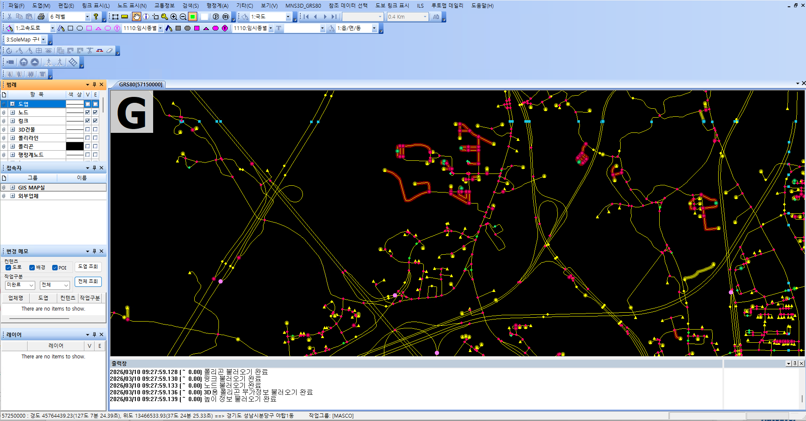
솔에딧 (Soledit) - 신규 Web
React, OpenLayers, Ant Design 기반 UI
신규 구축 중인 웹 기반 환경입니다. 밝은 톤의 배경 지도를 사용하며, 우측 사이드 패널을 통해 지도 레이어 및 스타일을 제어합니다. 상단과 우측 가장자리에 플로팅 툴바가 배치되어 있습니다.
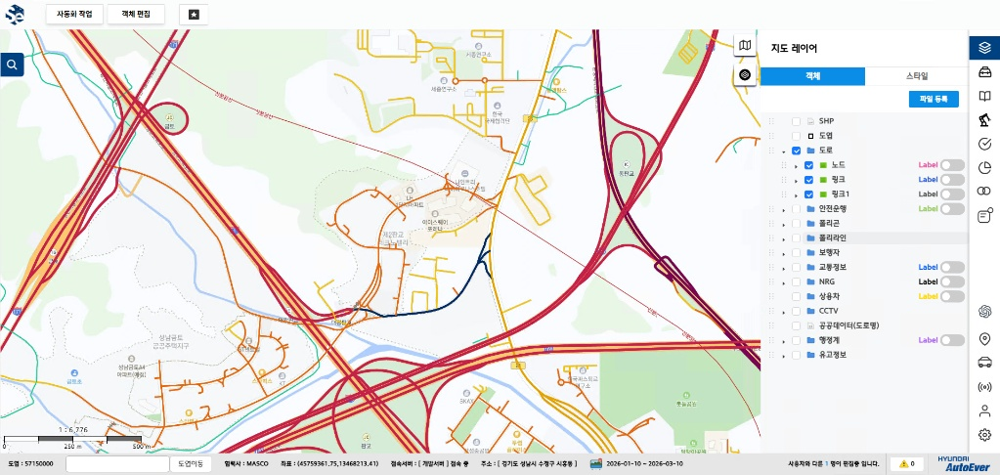
비교 2. 객체(노드) 속성 표시 및 편집
코코넛 (Coconut) - 팝업 창
MFC/C++ 기반 팝업 다이얼로그 UI
별도의 팝업(플로팅) 다이얼로그 창이 지도 위에 생성되어 객체의 속성을 조회하거나 정보를 편집하는 구조로 되어 있습니다.
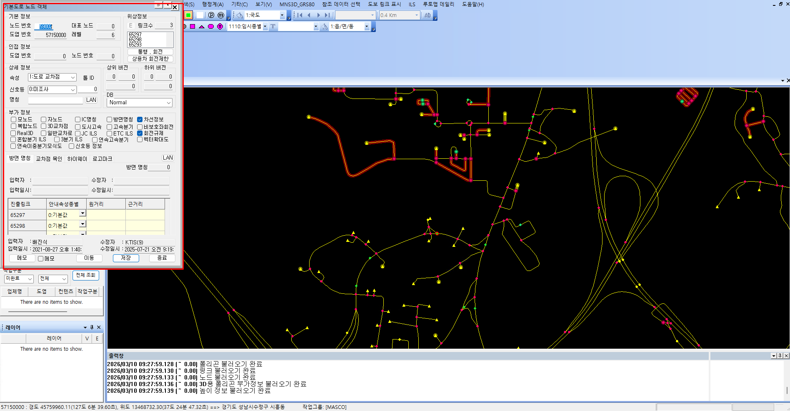
솔에딧 (Soledit) - 사이드 패널
React 기반 객체 편집 UI
객체(노드) 선택 시 좌측 고정 패널(LNB 영역)에 속성 정보가 표시되며, 상단의 탭(기본 정보, 노드정보, 하이웨이 등)을 활용하여 정보 항목을 구분하여 제공합니다.
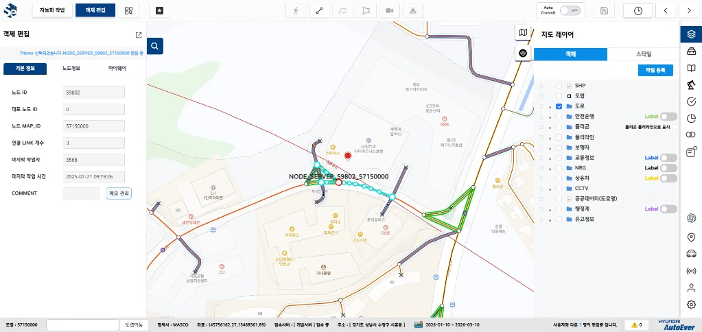
* 도로 레이어 표출
솔에딧 (Soledit)
툴박스 메뉴 표출로 도로, 배경등 각 카테고리 별로 메뉴를 분류했으며, 해당 메뉴는 아코디언으로 세부 메뉴를 표출할 수 있습니다.
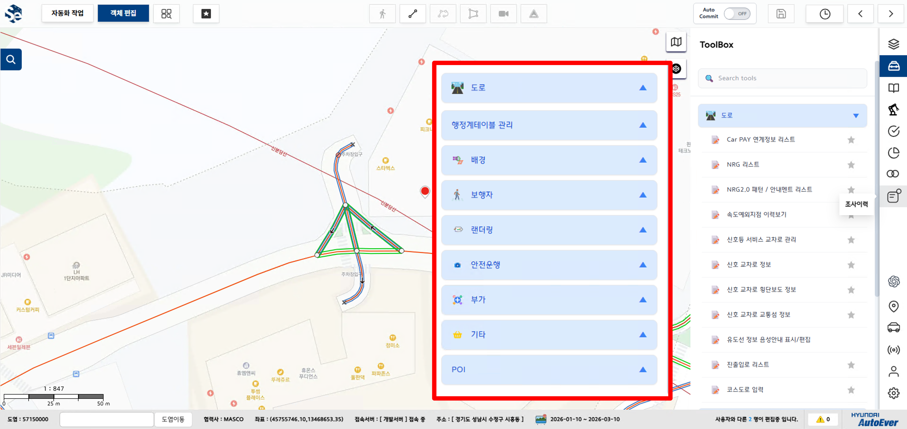
POI 검색 화면으로 좌측 돋보기 버튼을 클릭 시 접혀있던 POI 검색 메뉴가 표출되며, POI명 검색 후 검색 목록에서 특정 정보를 클릭 시 해당 POI 지점으로 이동합니다.
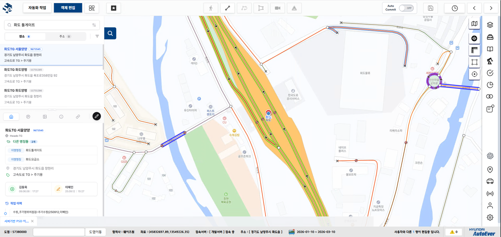
4. [카테고리 1] 보행자
보행자 환경(횡단보도, 육교, 지하보도 등) 데이터를 지도상에 구성합니다.
보행자 기능 목록
- 이미지 레이어 (Geo-Refer) 추가
- 도보링크 패턴 생성
- 도보 등산로 링크 패턴 속성
5. [카테고리 2] 도로
코스 및 도로의 메타데이터와 기하(Geometry) 좌표를 정밀하게 관리합니다.
코스도로 관리 기능
- 목록 조회: 전체 코스도로 데이터 리스트를 그리드 형태로 표출 및 검색합니다.
- 신규 생성: 새로운 코스도로 객체와 메타데이터를 입력하여 생성합니다.
- 정보 수정: 이미 등록된 코스도로의 속성 및 경로 데이터를 변경합니다.
- 반대 코스 생성: 선택한 코스도로의 진행 방향과 역방향인 코스를 자동으로 생성합니다.
- 경로 편집: 코스를 구성하는 세부 경로(링크)를 개별적으로 입력, 수정, 삭제합니다.
- 연결성 검증: 전후 링크의 통행정보를 기반으로 경로가 끊김 없이 정상적으로 연결되는지 확인합니다.
- 순서(SEQ) 재배치: 코스 경로를 구성하는 객체들의 진행 순서를 논리적으로 재정렬합니다.
- 경로 시각화 표출: 구성된 전체 코스 경로의 형상을 지도 상에 하이라이트하여 직관적으로 보여줍니다.
- 해시태그 관리: 코스도로의 효율적인 검색과 분류를 돕는 해시태그를 입력, 수정, 삭제합니다.
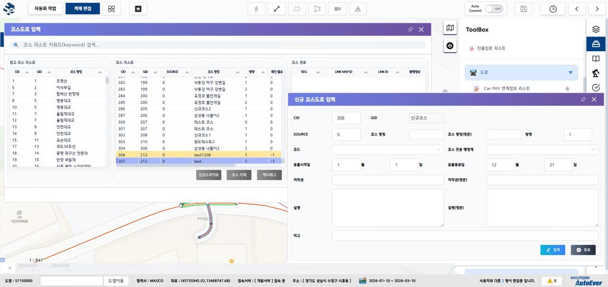
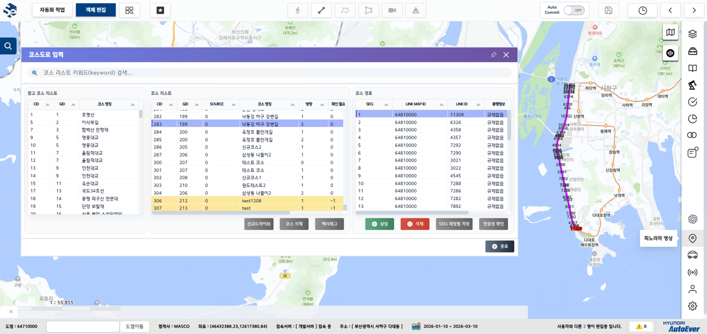
보간점 좌표
보간점 객체 선택 및 수치 직접 입력 동기화
- 보간점 객체 생성 및 선택
- 좌표 입력 후 해당 좌표로 변경
기타 도로 기능
- 레이싱서킷편집
- 전 방향 좌회전 불가
- 통행규제 / 통행가능
- 회전규제 자동설정
- 형상 복사
- 멀티 속성
- 대표(복합) 삭제
- 노선정보 보기
- 멀티라인 생성
- 레인 정보 표시/편집
- 도로배경 생성
- NRG불러오기
- 복합레인 입력
6. [카테고리 4] 랜더링
지도에 렌더링될 시설물(톨게이트, 분기점 등) 데이터를 관리합니다.
통합분기 관리 (9개의 분기/교차로/ILS 통합 화면)
- 특정 조건의 노드에 9개의 분기 중 필요한 분기 내용을 관리할 수 있는 기능입니다.
- 각 분기에는 패턴(Main)/arrow ID가 존재하고 이 ID들로 PSD 파일을 확인할 수 있습니다.
- 패턴(Main)/arrow ID를 조건에 따라 생성할 수 있습니다.
- 유도선 정보 테이블에서 유도선의 차선들과 색상을 확인할 수 있습니다.
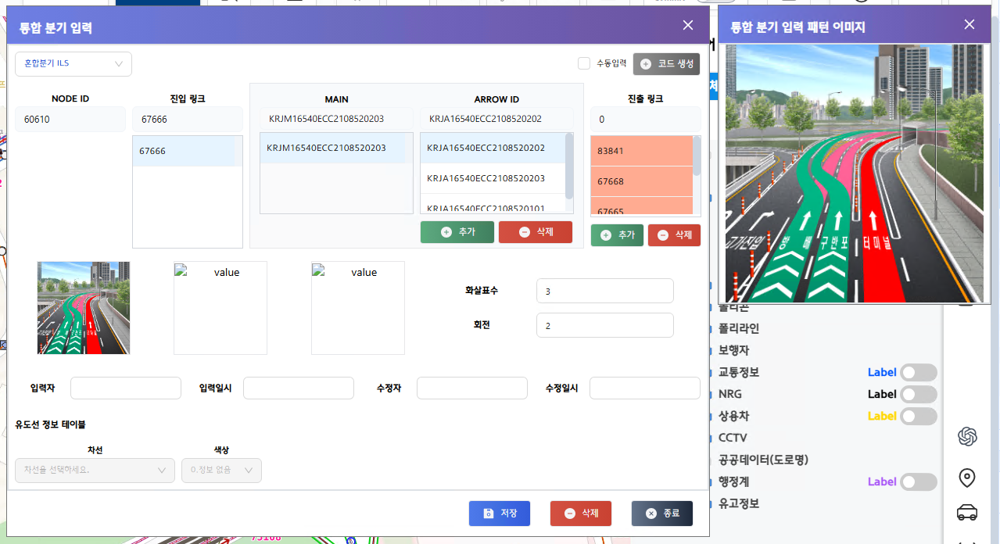
ETC ILS 관리
- 톨게이트 노드에서 관리할 수 있습니다.
- 차선수/위치를 입력/선택해 파일명(=Pattern/Image)에 적용할 수 있습니다.
- 파일명(=Pattern/Image)을 직접 입력하거나 코드 생성으로 자동 생성할 수 있습니다.
- 저장 후 톨게이트 레인정보 모달이 표출되며, 해당 모달에서 레인정보 변경 시 ETC ILS의 파일명이 동기화되어 변경됩니다.
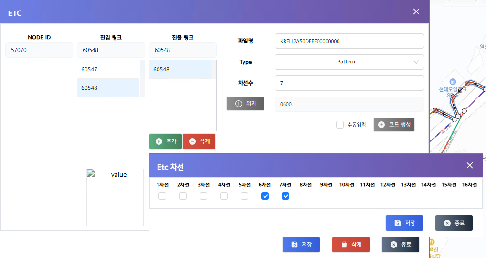
톨게이트 레인정보 관리
- 톨게이트 노드에서 관리할 수 있습니다.
- 통행정보는 하이패스/축중(일반)/HI축중(전용)/HI축중(겸용)으로 구분 가능하며, 차선 수만큼 선택할 수 있고 중복 선택은 불가합니다.
- 다차로정보는 통행정보가 하이패스인 경우에만 선택 가능하고, 연속으로 선택된 차로는 차선정보 화면에 붉은색 박스로 표현됩니다.
- 차선정보는 변경된 내용을 동적으로 반영합니다.
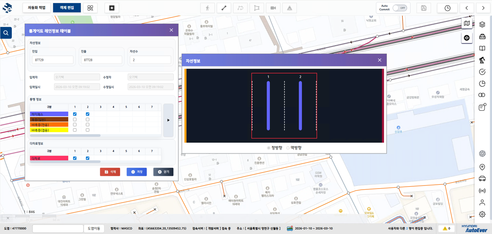
7. [카테고리 5] 배경 (GIS 편집)
OpenLayers 벡터 레이어 위에서 기하 연산 및 객체 편집을 수행합니다.
보간점을 이용한 폴리곤 분할
보간점을 선택하여 다각형 객체를 정밀하게 두 개 이상의 객체로 분할할 수 있습니다.
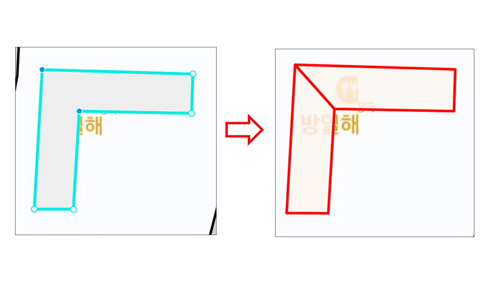
폴리곤 멀티라인 생성
- 폴리곤의 보간점을 선택 후 보간점 사이의 선형에 멀티라인을 생성할 수 있습니다.
- 이 기능은 [2_도로] 카테고리의 멀티라인 생성과 동일한 로직 및 기능을 공유합니다.
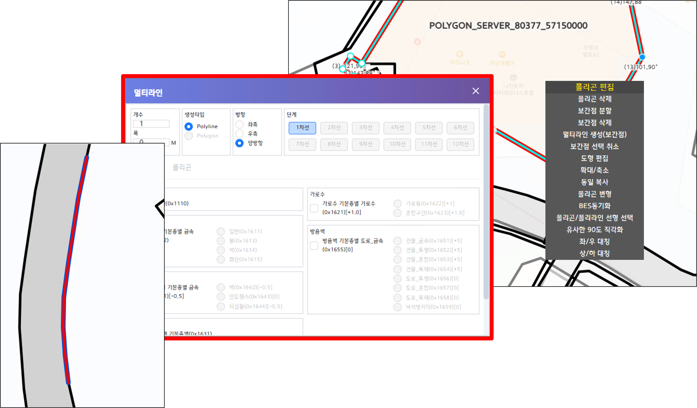
기타 배경 편집 기능 목록
- 폴리곤 → 폴리라인 분할
- 폴리곤 → 폴리곤 분할
- 폴리곤 → 다중 폴리곤 분할
- 폴리곤 → 교차 폴리곤 분할
- 폴리곤 확대 / 축소
- 다중 폴리곤 병합
- 인접 폴리곤 병합
- 멀티라인 생성(화면)
- 객체 이동
- 객체 회전
- 템플릿 폴리라인 파일 업로드
- 사각형 폴리라인 생성
- 시작점 변경
- 객체 회전(기준 선형에 맞춰 회전)
- 보간점 멀티 삭제
- 좌/우 대칭
- 상/하 대칭
8. [카테고리 6] 교통정보
도로 네트워크 위에 실시간 교통 흐름, 사고 정보 등을 매핑합니다.
데이터 스펙 정의 필요
관리 대상 기기 및 표출 방식에 대한 정의가 누락되어 있습니다.
9. 시스템 아키텍처
SPA 기반의 Web 구조로 전환하는 흐름도를 나타냅니다.
데이터 처리 파이프라인 요약
1. Legacy DB (GRS 좌표 데이터) ↓ 2. SQL Server DB (모든 CRUD는 GP_RTN_COMMON_CROSS_SAVE 등 Stored Procedure로 처리) ↓ 3. Spring Boot API (GeoJSON Payload 생성) ↓ 4. React + OpenLayers (데이터 로딩 시 EPSG:3857로 동적 변환하여 화면 표출)
10. 복잡도 분석
집중해야 할 주요 기술적 난관과 소요 자원을 평가합니다.